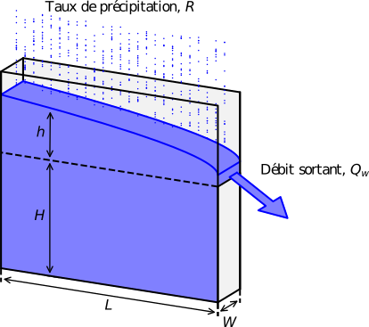

Research Projects
Mes projets de recherche actuels et passés
Featured Research Projects


Research Focus
C3S Project
Description détaillée du projet C3S. Ce projet concerne [domaine de recherche]. Les objectifs principaux sont...
Aquifer Project
Description détaillée du projet Aquifer. Ce projet aborde [domaine de recherche]. Les méthodologies utilisées incluent...
Methodologies
Approches Expérimentales
- Méthodologie 1
- Méthodologie 2
- Méthodologie 3
Approches Numériques
- Modélisation 1
- Simulation 2
- Analyse 3
Collaborations
Je collabore avec différents laboratoires et chercheurs :
- Laboratoire 1 - Université/Institution
- Laboratoire 2 - Université/Institution
- Collaborateur Principal - Institution